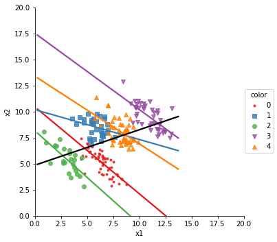

Regression -Based Simpson’s Paradox
Contents
Regression -Based Simpson’s Paradox¶
#imports
import numpy as np
import pandas as pd
import seaborn as sns
import scipy.stats as stats
import matplotlib.pyplot as plt
import mlsim
from mlsim import sp_plot
---------------------------------------------------------------------------
ImportError Traceback (most recent call last)
Input In [1], in <cell line: 10>()
6 import matplotlib.pyplot as plt
9 import mlsim
---> 10 from mlsim import sp_plot
ImportError: cannot import name 'sp_plot' from 'mlsim' (/opt/hostedtoolcache/Python/3.8.12/x64/lib/python3.8/site-packages/mlsim/__init__.py)
The basic version of SP in the regression form is the clustering model based SP- we use a gaussian mixture model and control parameters of the shape
# setup
r_clusters = -.6 # correlation coefficient of clusters
cluster_spread = .8 # pearson correlation of means
p_sp_clusters = .5 # portion of clusters with SP
k = 5 # number of clusters
cluster_size = [2,3]
domain_range = [0, 20, 0, 20]
N = 200 # number of points
p_clusters = [1.0/k]*k
We choose the portion of the clusters to have SP and then can draw samples
p_sp_clusters = .9
sp_df2 = fairsim.geometric_2d_gmm_sp(r_clusters,cluster_size,cluster_spread,
p_sp_clusters, domain_range,k,N,p_clusters)
sp_plot(sp_df2,'x1','x2','color')

We can change the parameters and see variation
# setup
r_clusters = -.4 # correlation coefficient of clusters
cluster_spread = .8 # pearson correlation of means
p_sp_clusters = .6 # portion of clusters with SP
k = 5 # number of clusters
cluster_size = [4,4]
domain_range = [0, 20, 0, 20]
N = 200 # number of points
p_clusters = [.5, .2, .1, .1, .1]
sp_df3 = fairsim.geometric_2d_gmm_sp(r_clusters,cluster_size,cluster_spread,
p_sp_clusters, domain_range,k,N,p_clusters)
sp_plot(sp_df3,'x1','x2','color')

Multiple Views¶
The first extension is to add multiple independent views, we have a wrapper function for that
many_sp_df = fairsim.geometric_indep_views_gmm_sp(2,r_clusters,cluster_size,cluster_spread,p_sp_clusters,
domain_range,k,N,p_clusters)
sp_plot(many_sp_df,'x1','x2','A')
sp_plot(many_sp_df,'x3','x4','B')
many_sp_df.head()
200
4
| x1 | x2 | x3 | x4 | A | B | |
|---|---|---|---|---|---|---|
| 0 | 8.961543 | 11.109414 | 7.681803 | 11.530193 | A4 | B3 |
| 1 | 9.210403 | 10.903621 | 5.246785 | 7.090758 | A4 | B4 |
| 2 | 12.482323 | 8.609680 | 15.633933 | 14.419567 | A1 | B0 |
| 3 | 12.500233 | 6.741229 | 11.467543 | 10.250224 | A1 | B2 |
| 4 | 9.066961 | 5.856741 | 15.269694 | 15.555281 | A2 | B0 |

The views do not have to have the same parameters though. We can make each parameter a list of values with the length set to the number of views.
# setup
r_clusters = [.8, -.2] # correlation coefficient of clusters
cluster_spread = [.8, .2] # pearson correlation of means
p_sp_clusters = [.6, 1] # portion of clusters with SP
k = [5,3] # number of clusters
cluster_size = [4,4]
domain_range = [0, 20, 0, 20]
N = 200 # number of points
p_clusters = [[.5, .2, .1, .1, .1],[1.0/3]*3]
many_sp_df_diff = fairsim.geometric_indep_views_gmm_sp(2,r_clusters,cluster_size,cluster_spread,p_sp_clusters,
domain_range,k,N,p_clusters)
sp_plot(many_sp_df_diff,'x1','x2','A')
sp_plot(many_sp_df_diff,'x3','x4','B')
many_sp_df.head()
200
4
| x1 | x2 | x3 | x4 | A | B | |
|---|---|---|---|---|---|---|
| 0 | 8.961543 | 11.109414 | 7.681803 | 11.530193 | A4 | B3 |
| 1 | 9.210403 | 10.903621 | 5.246785 | 7.090758 | A4 | B4 |
| 2 | 12.482323 | 8.609680 | 15.633933 | 14.419567 | A1 | B0 |
| 3 | 12.500233 | 6.741229 | 11.467543 | 10.250224 | A1 | B2 |
| 4 | 9.066961 | 5.856741 | 15.269694 | 15.555281 | A2 | B0 |